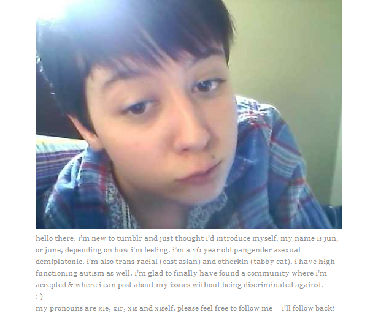
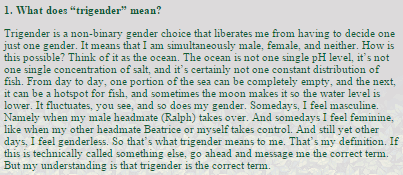
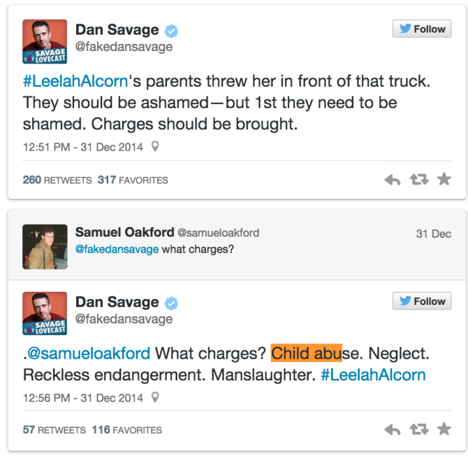

< < < Back
Why Is The Transsexual Lobby Trying To Politicize Leelah Alcorns Death? – Return Of Kings
On December 28, 2014, Ohio teenager Leelah Alcorn committed suicide by waltzing in front of an eighteen-wheeler. Born Joshua Ray Alcorn, he’s become a cause célèbre among SJWs and LGBT types because he was a transsexual who blamed his suicide on his Christian parents. In a suicide note posted to his (now-deleted) Tumblr blog, Alcorn expressed his hopes that his death would spark a revolution for trans rights:
…My death needs to mean something. My death needs to be counted in the number of transgender people who commit suicide this year. I want someone to look at that number and say “that’s fucked up” and fix it. Fix society. Please.
I’m just going to say it: Josh Alcorn was a selfish coward. In killing himself because of his parents’ unwillingness to let him wear dresses, he’s proven that transsexuals are mentally ill narcissists. His blood is on the hands of not his parents, who tried to raise him to be a happy and successful man, but on the social justice warriors and LGBT activists who fed his personality disorders.
And unless society recognizes that transsexuals need mental treatment, not sex change surgeries, the number of confused teenagers committing suicide will only grow.
Leelah Alcorn: Portrait Of A Narcissist
Josh Alcorn’s suicide note provides a disturbing glimpse into his mind. Beyond the obvious desire for fame that motivated his suicide, Alcorn inadvertently gives insights into his other mental issues. For example, he states that he first “discovered” he was transgender when he was 14, he immediately ran to his mommy like a good little Millennial looking for validation:
When I was 14, I learned what transgender meant and cried of happiness. After 10 years of confusion I finally understood who I was. I immediately told my mom, and she reacted extremely negatively, telling me that it was a phase, that I would never truly be a girl, that God doesn’t make mistakes, that I am wrong…
Alcorn’s parents reacted to their fruity son’s proclamations in the only sane way: by getting him professional help. They realized that like most teenagers, he was just acting out, no different than kids of generations past who rebelled by becoming hippies, punks, or goths. Unfortunately, unlike generations past, the sewer pipes of social media and social justice warrior ideology enabled Alcorn to find a support group for his pathologies:
I formed a sort of a “fuck you” attitude towards my parents and came out as gay at school, thinking that maybe if I eased into coming out as trans it would be less of a shock. Although the reaction from my friends was positive, my parents were pissed. They felt like I was attacking their image, and that I was an embarrassment to them. They wanted me to be their perfect little straight christian boy, and that’s obviously not what I wanted.
Alcorn’s parents reacted by taking away his phone and banning him from using social media: again, a perfectly reasonable response to get him away from influences that were corrupting his mind. They made the mistake of letting him back on Tumblr and other media at the end of the school year, at which point Alcorn reveals an aspect of his personality that none of the SJWs squirting crocodile tears over his corpse have noticed:
At the end of the school year, my parents finally came around and gave me my phone and let me back on social media. I was excited, I finally had my friends back. They were extremely excited to see me and talk to me, but only at first. Eventually they realized they didn’t actually give a shit about me, and I felt even lonelier than I did before. The only friends I thought I had only liked me because they saw me five times a week.
In other words, Josh Alcorn had no friends, and people only tolerated him because they had no choice. While there’s nothing wrong with being shy—I had a hard time making friends as a teenager—Alcorn’s account suggests that his own behavior and weirdness drove people away.
SJWs like to argue that the high rates of mental illness and suicide trannies suffer from is a result of “transphobia,” but the reality is the reverse: people who become transsexuals are already mentally ill.
The desire to mutilate your genitals and take hormones in order to become an ersatz version of the opposite sex is indicative of defective brain chemistry. Studies have consistently shown that the pathologies of homosexuals and transsexuals start with them and result in their loved ones being alienated, not the other way around.
Finally, Josh Alcorn’s method of suicide displays how much of a monster he had become. He couldn’t simply slit his wrists in the bathtub and be done with it: he chose to make an innocent truck driver the instrument of his death. Not only will that driver face professional and criminal penalties, he’ll be permanently scarred by knowing that he killed a human being, even if it was unintentional. Only a true narcissist would inflict that kind of misery on someone.

Leelah Alcorn Died Because Of SJWs
As selfish and damaged as Josh Alcorn was, his narcissism didn’t bloom in a vacuum. If he had grown up 30, 20, or even 10 years ago, he would have gotten over his childish “transsexuality” and become a normal man. His twisted beliefs were fed to him in part by social justice warriors, backed by the leftist mainstream media.
Tumblr, where Alcorn kept his blog, is the primary culprit. The site is ground zero for the most virulent strains of SJW ideology. On Tumblr, there are whole communities dedicated to normalizing freakish behavior and mental illness. Examples include This is Thin Privilege, a site where the morbidly obese whine about how being 400 pounds overweight makes life difficult, as well as the phenomenon of “headmates,” where people pretend to have schizophrenia so they can be cool:

While letting the world’s rejects start Doctor Who fanblogs and get into silly slap-fights over pronoun usage might seem harmless, by allowing their son to use social media like Tumblr, the Alcorns undermined their own attempts to put him on the straight and narrow. The existence of misfit online communities such as those on Tumblr and Reddit reinforce deviant behavior by making it seem normal and giving the mentally ill a place to commiserate.
In this specific instance, the mainstream media’s promotion of transsexuality was also responsible for Josh Alcorn’s suicide. There’s no evidence that sexual reassignment surgery helps trannies: in fact, the suicide rate of post-op transsexuals is far higher than that of pre-ops. By glorifying demented individuals like Laverne Cox and Fallon Fox and accusing critics of “transphobia,” the leftist media is driving countless people to an early grave.
The worst part of Josh Alcorn’s suicide is that his parents, who were trying their best to help him, are now the focus of an SJW hate campaign. Dan Savage, a one-man argument for returning homosexuality to the DSM, has called for the Alcorns to be arrested for “child abuse” and “neglect,” among other things:

The Alcorns have also been forced to move their son’s funeral due to death threats from SJWs. Finally, the hashtag activists are out in full force, sponsoring a Change.org petition to have the Alcorns use Josh’s “true name” “Leelah” on his headstone: it has over 80,000 signatures at the time of this writing.
Mammas, Don’t Let Your Babies Grow Up To Be Drag Queens
While we can criticize reparative therapy as well as the other methods that the Alcorns used to try to help their son, we cannot deny that they had his best interests at heart. By trying to save Josh from a life of social ostracism and suicidal ideation, the Alcorns were showing just how much they loved him.
To see them defamed for refusing to let a teenager—a class of people whom society doesn’t consider mature enough to smoke, drink, or vote—irreversibly vivisect his private parts is heartbreaking.
As Josh Alcorn’s attention whoring shows, it’s absolutely imperative for parents to protect their children from SJW influence. By tricking impressionable kids into thinking they can have their poles turned into holes, social justice warriors and their media backers are exacerbating mental illness and suicide in America. Only by insulating children from their corrosive ideas—and fighting them every step of the way—can we stop the plague of transsexuality.
Joshua Alcorn should not be remembered as a tranny martyred by intolerant right-wing bigotry, but a disturbed young man who took his life—already a selfish act—in the most reprehensible way possible. And so long as the forces who corrupted Alcorn still reign, other children will be seduced in the same way.
Read More: 5 Ways To Stop Omega Males From Becoming Transsexuals